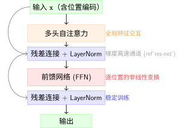

Transformer：注意力的极致#
从RNN到注意力：一个思想的跳跃 中，因果注意力已经可以把每个位置与所有前序位置直接关联。但你可能会问：既然注意力这么好，为什么还要保留 RNN 的循环结构？
Transformer 的回答是：不要了。把 RNN 全部扔掉，整个架构只靠注意力来传递信息。这就是 “Attention Is All You Need” [VSP+17] 的核心主张。
历史背景#
2014年，Bahdanau 等人提出了注意力机制 [BCB15]，让解码器在生成每个词时能"回顾"编码器的所有隐状态——我们已在 从RNN到注意力：一个思想的跳跃 中推导了这一思想的起源。但 Bahdanau 的架构仍以 RNN 为骨架，注意力只是"外挂"。
2017年，Vaswani 等人在 “Attention Is All You Need” 中做了一个大胆的决定：完全抛弃 RNN。他们证明，纯注意力架构不仅在翻译质量上超越了当时最好的 RNN 模型，而且训练更快（因为可以并行）。
备注
历史意义：“Attention Is All You Need” 或许是深度学习史上影响力最大的单篇论文。它不仅创造了 Transformer，还催生了 BERT、GPT、ViT 等几乎所有现代大模型的架构基座。7年后的今天，Transformer 仍是工业界和学术界的主流选择。
从因果注意力到Transformer的四个升级#
升级一：自注意力——所有位置互相关注#
从RNN到注意力：一个思想的跳跃 中实现的是因果注意力——\(t\) 只能看到 \(< t\)。但 Transformer 的一个关键洞察是：在编码阶段（理解输入），每个位置应该能看到所有位置，包括"未来"的词。
备注
为什么？理解一个句子时，后面的词确实能帮助理解前面的词。比如"我把苹果吃了"——"吃了"帮助确定"苹果"是食物（而非手机品牌）。好的编码器应该双向理解。
但 Transformer 分两个阶段使用注意力：
阶段 |
注意力类型 |
能看到什么 |
目的 |
|---|---|---|---|
编码器（Encoder） |
全自注意力 |
所有位置（含未来） |
双向理解输入 |
解码器（Decoder） |
因果自注意力 |
只有过去 |
逐词生成输出 |
我们集中讨论核心机制——自注意力（Self-Attention）：在一个序列内部，每个位置作为 Query，去关注所有位置的 Key 和 Value。
自注意力是卷积的超集
如果你已经学过 卷积神经网络，这里有一个重要的联系：自注意力在表达能力上是卷积的严格超集。
卷积（感受野）：一个 \(3 \times 3\) 卷积核只看相邻 9 个像素。它对所有输入位置使用同一套权重（权值共享），且感受野范围是固定的——无论输入是什么，每个神经元看到的区域大小不变。
自注意力：通过注意力分数矩阵 \(\text{softmax}(QK^T/\sqrt{d_k})\)，每个位置可以关注任意其他位置。权值是输入依赖的——不同输入产生不同的注意力分布。感受野是动态的——遇到相关的内容就多关注，不相关的就忽略。
卷积是自注意力的一个特例：如果把注意力限制为只在局部邻域内计算，且固定注意力权重（不依赖输入），就退化成了卷积。[CLJ20]
备注
ViT 为什么能成功？ 卷积神经网络 告诉我们，CNN 成功的核心是 归纳偏置（Inductive Bias）——局部感受野和权值共享。自注意力放弃了这些硬编码的先验，换来了更大的灵活性。在数据量充足时，灵活性胜出（ViT 超越 CNN）；在数据量不足时，CNN 的先验仍然宝贵（CNN 在小数据集上更好）。
这也是为什么现代架构设计的方向之一是让网络自己学会感受野——自注意力做到了这一点：它不是被动接受"只看邻居"的限制，而是主动学习"该看哪里"。
升级二：多头注意力——多个视角并行#
单头注意力有一个局限：在一次 Softmax 中只能表达一种"关联模式"。但语言中的关联是多维度的——同一个词可能同时关注"主语是谁"、“在描述什么动作”、“有什么修饰关系”。
多头注意力（Multi-Head Attention） 的解决方案很简单：并行运行 \(h\) 个独立的注意力，每个头有自己的 \(\mathbf{W}_q, \mathbf{W}_k, \mathbf{W}_v\)，最后拼接输出：
生活类比
单头注意力：请一位专家审阅文档，她只能关注一个方面（如语法）
多头注意力：同时请语法专家、逻辑专家、风格专家，每人从自己的角度审阅，最后汇总意见
升级三：位置编码——告诉注意力"顺序"在哪#
归纳偏置（Inductive Bias） 告诉我们，CNN 通过局部连接内置了"相邻像素相关"的先验。但自注意力有一个致命缺陷：它完全不知道位置信息——"A 看到 B"和"B 看到 A"在注意力评分中是对称的（如果不加 mask），位置 1 和位置 100 在相似度计算中没有本质区别。
解决方案是位置编码（Positional Encoding）：在输入嵌入中加入一个仅依赖位置的信号，让注意力"知道"每个词在序列中的位置。原始 Transformer 使用正弦/余弦函数：
备注
为什么用正弦/余弦而不是学出来的位置编码？
可以外推到训练时未见过的序列长度
相对位置关系可以通过三角函数公式推导出来——\(\text{PE}(pos+k)\) 可以表示为 \(\text{PE}(pos)\) 的线性函数
不同频率的正弦波在"位置分辨率"上互补——低频率编码大范围位置关系，高频率编码精细位置差异
升级四：完整的Transformer Block#
除了注意力，Transformer 还引入了另外两个关键组件：

Transformer Block 结构
残差连接 + LayerNorm：与 ResNet：深层网络的突破 的设计思想一致——为梯度创建"捷径"，让深层网络更易训练。区别在于 Transformer 用 LayerNorm（沿特征维度归一化），ResNet 多用 BatchNorm（沿批次维度归一化）[BKH16]。
前馈网络（FFN）：被低估的"知识存储器"#
注意力完成"跨位置的信息交互"后，FFN 负责"每个位置内部的特征变换"：
表面上看，这只是一个简单的两层全连接。但它藏着 Transformer 的一个重要设计哲学。
注意力 vs FFN 的分工
注意力：“和其他位置交换信息”——每个位置的表示吸收其他位置的内容。操作在序列维度上
FFN：“自己内部消化信息”——每个位置独立地对自己吸收来的信息做非线性处理。操作在特征维度上
类比：开会时，听别人发言是"注意力"（收集信息），自己整理笔记是"FFN"（加工信息）。
为什么中间维度要扩大 4 倍？
FFN 采用一个"瓶颈"结构：\(d_{\text{model}} \to d_{\text{ff}} \to d_{\text{model}}\)，且 \(d_{\text{ff}} = 4 \times d_{\text{model}}\)。这不是随意选的：
设计选择 |
直觉 |
|---|---|
先升维 |
将特征投影到高维空间，让不同维度之间的交互更充分——就像把一页纸的内容摊开在桌面上，更容易发现关联 |
ReLU 非线性 |
在高维空间中做非线性"折叠"——激活某些模式，抑制另一些（回顾 激活函数） |
再降维 |
压缩回原始维度，只保留对当前任务最有用的特征组合 |
4 倍这个数字是经验性的——太小（如 2 倍）表达能力不足，太大（如 8 倍）参数量激增但收益递减。实践中 4 倍是一个广泛验证的甜点。
参数量对比——FFN 才是"大头"：
设 \(d_{\text{model}} = 512\)，\(d_{\text{ff}} = 2048\)：
组件 |
参数量 |
占比 |
|---|---|---|
多头注意力（Q/K/V/O 四个投影） |
\(4 \times 512^2 \approx 1.05\)M |
~33% |
FFN（\(\mathbf{W}_1 + \mathbf{W}_2\)） |
\(512 \times 2048 \times 2 \approx 2.10\)M |
~67% |
FFN 的参数量是注意力的约 2 倍！ 在 GPT-3（175B 参数）中，FFN 层占总参数的大多数。这暗示了一个重要事实：Transformer 的知识主要存储在 FFN 的权重中——注意力负责"查什么"，FFN 负责"知道什么" [GSBL21]。
备注
FFN 可以看作一种键值存储器：
\(\mathbf{W}_1\) 的各行可以视为大量"键"（keys）——“我存储了哪些模式”
ReLU 后的激活模式 \(\text{ReLU}(\mathbf{x}\mathbf{W}_1 + \mathbf{b}_1)\) 表示"当前输入匹配了哪些模式"
\(\mathbf{W}_2\) 的各列可以视为"值"（values）——“匹配后输出什么”
这种"键值存储"的视角可以解释为什么大模型能记住大量事实——FFN 的权重为每个学到的知识模式提供了存储空间。
备注
Transformer 和 CNN 中的注意力机制 中的注意力是同一种"注意力"吗？
不是。注意区分：
CNN注意力（SE-Net、CBAM）：在卷积特征图的通道或空间维度上做重加权，目的是让网络学会"哪些特征更重要"。权重是输入依赖的标量（每个通道一个权重，或每个空间位置一个权重）。
Transformer自注意力：在序列维度上做重加权，目的是让每个位置聚合所有其他位置的信息。权重是输入依赖的矩阵（每个位置对关注所有其他位置）。
Transformer的代价：O(n²)复杂度#
自注意力的核心计算是计算注意力分数矩阵：
\(\mathbf{Q} \mathbf{K}^T\) 的结果是一个 \(n \times n\) 的矩阵——序列中每对位置之间都有一个分数。这一步的时间和空间复杂度都是 \(O(n^2)\)。
序列长度 \(n\) |
注意力矩阵大小 |
内存占用 (fp16) |
|---|---|---|
1,000 |
1,000 × 1,000 |
~2 MB |
10,000 |
10,000 × 10,000 |
~200 MB |
100,000 |
100,000 × 100,000 |
~20 GB |
1,000,000 |
1,000,000 × 1,000,000 |
~2 TB |
Transformer的核心矛盾
Transformer 通过注意力解决了 RNN 的长程依赖问题——任何两个位置之间只有 O(1) 的信息路径。但代价是计算复杂度从 RNN 的 O(n) 变成了 O(n²)。对于长序列（如整本书、长视频、DNA序列），这个代价变得不可承受。
这正是为什么现代大语言模型的上下文窗口如此"昂贵"——每翻倍一次上下文长度，计算量增长四倍。FlashAttention 等工程优化可以缓解常数因子，但无法改变 \(O(n^2)\) 的渐进复杂性。
代码实践：简化的Transformer Encoder#
import torch
import torch.nn as nn
import torch.nn.functional as F
import math
class MultiHeadSelfAttention(nn.Module):
"""
多头自注意力（无因果mask，用于编码器）
理论对应 {ref}`transformer` 中 Q/K/V 的完整推广
"""
def __init__(self, d_model=512, n_heads=8):
super().__init__()
assert d_model % n_heads == 0
self.d_model = d_model
self.n_heads = n_heads
self.d_k = d_model // n_heads # 每个头处理的维度
# Q, K, V 的投影矩阵——将 d_model 维映射到 d_model 维
self.W_q = nn.Linear(d_model, d_model)
self.W_k = nn.Linear(d_model, d_model)
self.W_v = nn.Linear(d_model, d_model)
self.W_o = nn.Linear(d_model, d_model) # 输出投影
def forward(self, x):
B, T, D = x.shape # batch, seq_len, d_model
# 步骤1: 投影并拆分为多头
# 将 (B, T, D) 投影为 (B, T, D)，再拆成 (B, n_heads, T, d_k)
Q = self.W_q(x).view(B, T, self.n_heads, self.d_k).transpose(1, 2)
K = self.W_k(x).view(B, T, self.n_heads, self.d_k).transpose(1, 2)
V = self.W_v(x).view(B, T, self.n_heads, self.d_k).transpose(1, 2)
# 步骤2: 缩放点积注意力——O(n²) 复杂度就在这里
# scores: (B, n_heads, T, T) ——每个头有自己的注意力矩阵
scores = (Q @ K.transpose(-2, -1)) / math.sqrt(self.d_k)
attn = F.softmax(scores, dim=-1) # 按 Key 维度归一化
# 步骤3: 加权聚合 Value
# (B, n_heads, T, d_k) ——每个位置获得所有位置的加权表示
head_outputs = attn @ V
# 步骤4: 合并多头输出
# 从 (B, n_heads, T, d_k) 变回 (B, T, D)
concat = head_outputs.transpose(1, 2).contiguous().view(B, T, D)
return self.W_o(concat)
class TransformerEncoderBlock(nn.Module):
"""
单个Transformer编码器块（{ref}`transformer` 中的完整Block）
结构：输入 → 多头注意力（+残差+LN）→ FFN（+残差+LN）→ 输出
"""
def __init__(self, d_model=512, n_heads=8, d_ff=2048):
super().__init__()
self.attention = MultiHeadSelfAttention(d_model, n_heads)
self.norm1 = nn.LayerNorm(d_model) # 注意力后的归一化
self.norm2 = nn.LayerNorm(d_model) # FFN后的归一化
# FFN：两层全连接，中间维度通常为 d_model 的 4 倍
self.ffn = nn.Sequential(
nn.Linear(d_model, d_ff),
nn.ReLU(),
nn.Linear(d_ff, d_model),
)
def forward(self, x):
# 残差连接：x + Attention(Norm(x))
# Pre-LN 风格：先归一化再进入子层（更稳定的训练）
attn_out = self.attention(self.norm1(x))
x = x + attn_out # 残差（{ref}`res-net` 的思想）
# FFN + 残差
ffn_out = self.ffn(self.norm2(x))
x = x + ffn_out
return x
# 测试：6层编码器处理长度为100的序列
x = torch.randn(2, 100, 512) # batch=2, seq_len=100, d_model=512
encoder = nn.Sequential(*[TransformerEncoderBlock() for _ in range(6)])
output = encoder(x)
# 如果序列长度翻倍到200，计算量约增长4倍 → 验证 O(n²)
本节小结
Transformer 的四个升级：自注意力（双向）、多头（多视角）、位置编码（注入顺序信息）、残差+FFN（深层架构）
注意力和 CNN 中的注意力机制 中的 CNN 注意力是不同的概念——一个在序列维度上交互，一个在通道/空间维度上重加权
Transformer 以 O(n²) 的代价换来了 O(1) 的信息路径——用计算量换长程依赖能力
这个代价推动了对更高效架构的探索——我们的下一站
Transformer 成功了——它几乎统治了 NLP、CV 乃至更多领域的序列建模。但 \(O(n^2)\) 这个"原罪"始终存在。下一节 Mamba 简述：对RNN思想的回归 中，我们将看到一个有趣的思想回归：能不能既拥有 RNN 的 O(n) 效率，又解决长程依赖问题？
参考文献
Jimmy Lei Ba, Jamie Ryan Kiros, and Geoffrey E Hinton. Layer normalization. In International Conference on Machine Learning, 1247–1256. PMLR, 2016.
Dzmitry Bahdanau, Kyunghyun Cho, and Yoshua Bengio. Neural machine translation by jointly learning to align and translate. In International Conference on Learning Representations (ICLR). 2015.
Jean-Baptiste Cordonnier, Andreas Loukas, and Martin Jaggi. On the relationship between self-attention and convolutional layers. In International Conference on Learning Representations (ICLR). 2020.
Mor Geva, Roei Schuster, Jonathan Berant, and Omer Levy. Transformer feed-forward layers are key-value memories. In Proceedings of the Conference on Empirical Methods in Natural Language Processing (EMNLP), 5484–5495. 2021.
Ashish Vaswani, Noam Shazeer, Niki Parmar, Jakob Uszkoreit, Llion Jones, Aidan N Gomez, Łukasz Kaiser, and Illia Polosukhin. Attention is all you need. In Advances in Neural Information Processing Systems (NeurIPS), volume 30. 2017.
贡献者与修订历史
查看详细修订记录
-
d7c9da72026-05-12 - Heyan Zhu: docs: update sphinx only filter from not pdf to not latex -
a954ca52026-05-11 - Heyan Zhu: docs: revise and restructure documentation, fix formatting, and move env setup and sphinx guide to a separate appendix section -
8eb32752026-05-09 - Heyan Zhu: feat(sequence-modeling): add new chapter on sequence modeling from RNN to Mamba